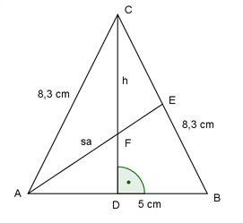

Flächenberechnungen Aufgabe 57 Ein gleichschenkliges Dreieck hat eine Grundseite von 5 cm und Schenkel von 8,3 cm. Wie lang ist die Seitenhalbierende eines Schenkels?  Satz von Pythagoras im Dreieck ADC c a² = h² + (---)² 2 8,3² = h² + 2,5² | -2,5² h² = 68,9 - 6,25 = 62,65 h = √62,65 = 7,9 cm Der Punkt F ist der Schwerpunkt des Dreiecks und unterteilt die Seitenhalbierenden im Verhältnis 2 : 1. Satz von Pythagoras im Dreieck ADF: h ist die Seitenhalbierende von c. 2 1 c (--- sa)² = (--- h)² + (---)² 3 3 2 4 1 --- sa² = --- * 7,9² + 6,25 | *9 9 9 4sa² = 62,4 + 56,25 4sa² = 116,25 |:4 sa² = 29,1 sa = √29,1 = 5,4 cm